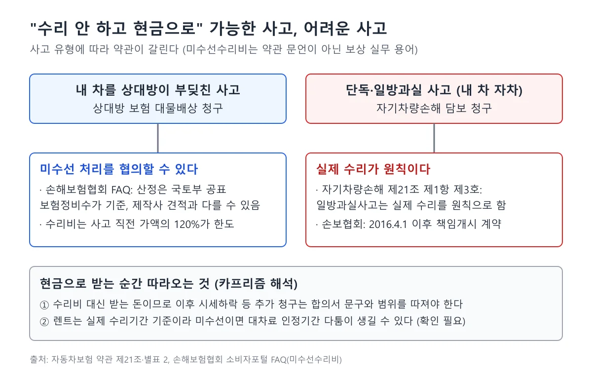
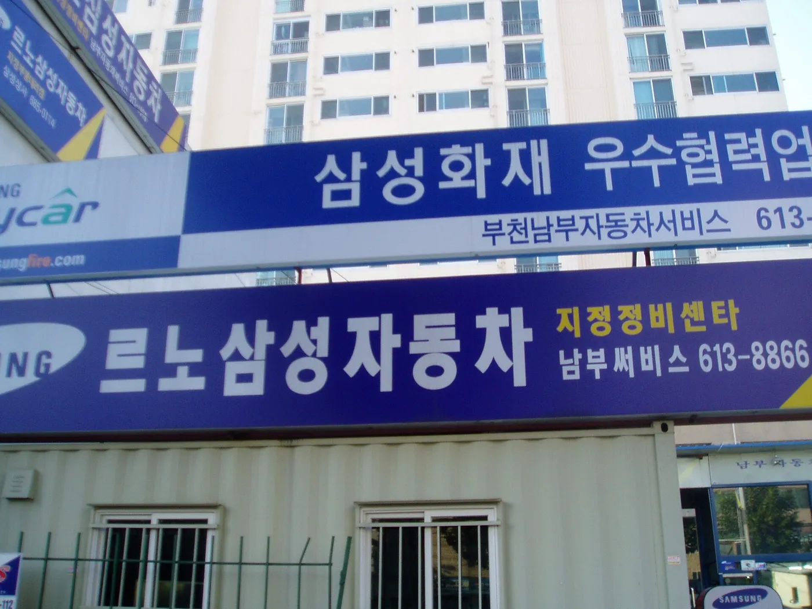
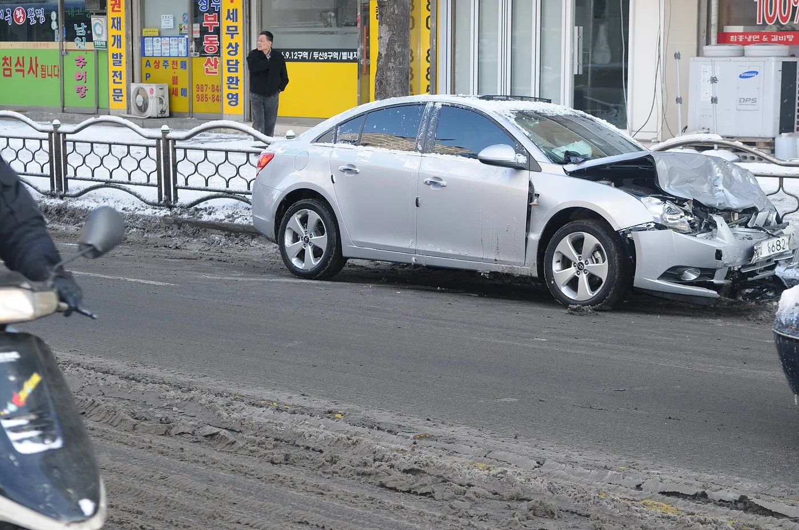
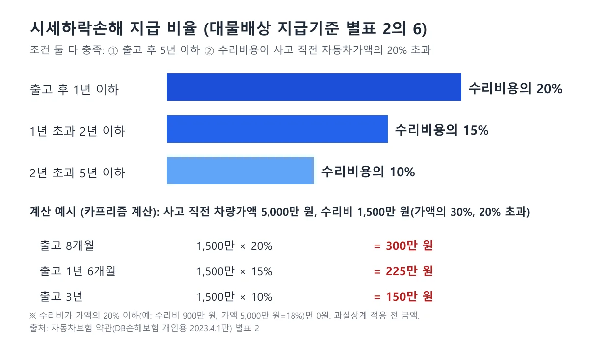
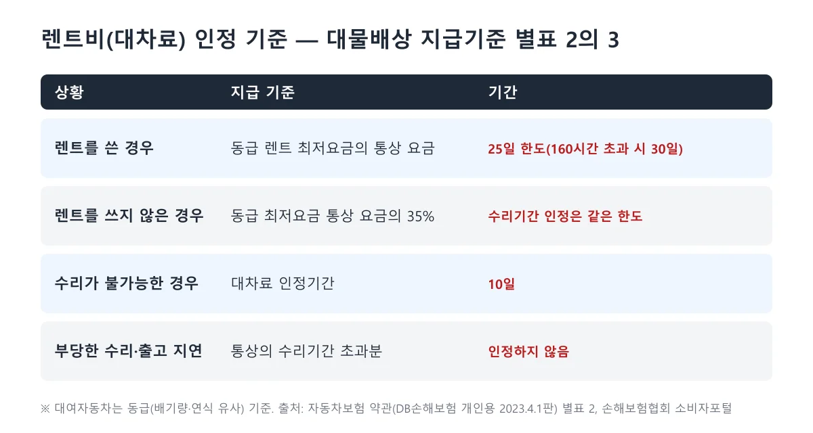
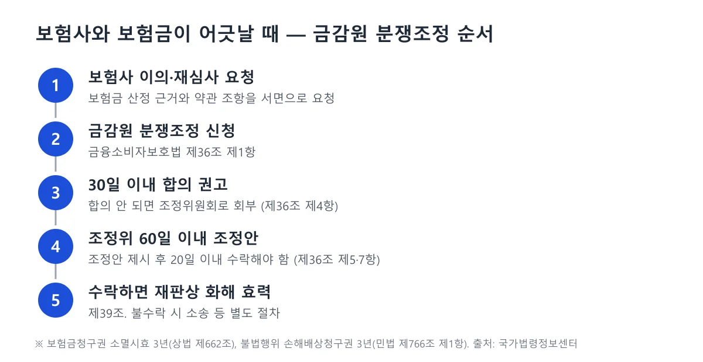

▲ 사고 뒤 수리를 맡길지, 수리 대신 보험금을 받을지는 정비소 견적에서 갈린다 ⓒ 최광모, Wikimedia Commons (CC0)
사고가 나면 정비소 견적부터 받는다. 그런데 "수리는 안 할 테니 그 돈을 현금으로 달라"는 요구가 가능한지, 신차를 받은 지 석 달 만에 앞범퍼와 휀더를 갈았는데 "중고차 값이 떨어진 것"까지 받을 수 있는지는 사고 유형에 따라 답이 갈린다. 이 글은 보험사가 공개한 자동차보험 약관 PDF(DB손해보험 개인용, 파일명 기준 2023년 4월 1일판)를 직접 열어 대물배상 지급기준 별표 2와 자기차량손해 제21·24조를 대조하고, 대법원 판결과 금융소비자보호법 조문을 국가법령정보센터에서 확인해 정리했다. 금융감독원 표준약관 파일 자체는 이번에도 열지 못했다. 다만 시세하락 비율은 2019년 개정을 다룬 뉴시스 보도, 보험연구원(KIRI) 자료, 금융감독원이 2025년 11월 안내한 시세하락손해 기준(파이낸셜뉴스 보도)으로 교차 확인했고, 렌트비와 미수선수리비는 금융감독원이 2026년 2월 직접 낸 보도자료 원문(PDF)을 열어 확인했다. 대법원 판결문은 국가법령정보센터 원문을 열어 판시 내용과 사실관계를 대조했다.
1. 먼저 전제 — 미수선수리비와 시세하락은 어느 보험에서 나오나
자동차보험은 누가 잘못했느냐에 따라 돈이 나오는 길이 둘로 나뉜다. 내 차를 상대방이 들이받은 경우에는 상대방 보험의 대물배상으로 내 차 수리비와 렌트비, 시세하락 손해를 받는다. 내가 단독으로 사고를 냈거나 내 과실만 있는 사고라면 내 보험의 자기차량손해(자차)로 처리한다. 약관을 열어보면 시세하락 손해는 대물배상 지급기준(별표 2)의 6번 항목에만 있고, 자차의 보상 조항인 제21조(보상하는 손해)와 제24조(지급보험금의 계산)에서는 시세하락 항목을 찾지 못했다. 그래서 "내 보험으로 감가를 받을 수 있나"라는 질문의 답은 표준 약관 기준으로는 "아니다"에 가깝고, 상대 과실이 있어야 청구할 수 있다. 다만 보험사 특약으로는 예외가 있다. 삼성화재는 2025년 4월 6일부터 자기차량손해와 연계한 시세하락손해 보상 특약을 팔기 시작했다고 시대 보도가 전했고, 수리비가 차량가액의 20%를 넘으면 차령에 따라 수리비의 10~20%를 준다. 가입 여부와 조건은 보험사별로 다르니 증권에서 직접 확인해야 한다.
| 구분 | 상대방 과실이 있는 사고 | 단독·일방과실 사고 |
|---|---|---|
| 청구처 | 상대방 보험사 대물배상 | 내 보험 자기차량손해(가입한 경우) |
| 수리비 한도 | 사고 직전 가액의 120%(조건 따라 130%) | 보험가입금액 한도, 자기부담금 공제 |
| 시세하락손해 | 별표 2의 6에서 요건 충족 시 지급 | 기본 약관에서 항목을 확인하지 못함(일부 보험사 특약은 별도) |
| 렌트비(대차료) | 별표 2의 3에서 지급 | 자차 일방과실·단독사고는 렌트비 보상 불가(금감원 2026.2 사례). 쌍방과실은 본인 과실분 부담 |
이 글에서 쓴 약관 DB손해보험 개인용 자동차보험 약관(공개 PDF, 파일명 기준 2023-04-01)이다. 금융감독원 표준약관을 따르는 구조이고 시세하락 비율이 2019년 개정 보도와 같지만, 보험사·가입 시점마다 문구가 다를 수 있으니 본인 증권의 약관 번호를 확인해야 한다. 금융감독원은 2025년 11월 안내(파이낸셜뉴스 11월 23일 보도)에서도 시세하락손해를 "출고 후 5년 이하, 수리비가 사고 직전 차량가액의 20% 초과" 두 조건을 모두 충족할 때 1년 이하 20%·1~2년 15%·2~5년 10%로 지급한다고 설명했다. 2019년 5월 개정 이후 이 비율이 다시 바뀌었다는 자료는 이번에도 찾지 못했다.
2. 미수선수리비 — 수리 안 하고 현금으로 받을 수 있나

▲ 사고 유형별로 "수리 없이 보험금"이 가능한지 정리한 도표(카프리즘 제작)
먼저 짚을 점은 약관에 "미수선수리비"라는 말이 나오지 않는다는 것이다. 대물배상 지급기준 별표 2의 1번 항목은 수리비용의 지급대상을 "원상회복이 가능하여 수리하는 경우"로, 인정기준액을 "사고 직전의 상태로 원상회복하는 데 소요되는 필요 타당한 비용으로서 실제 수리비용"으로 적었다. 수리하지 않고 현금으로 받는 처리는 약관 문구보다 보상 실무에서 쓰는 방식이다. 손해보험협회 소비자포털 FAQ가 이 처리를 직접 설명하고, 금융감독원은 2026년 2월 보도자료에서 미수선수리비를 "자동차사고 피해자에게 차량 수리 대신 현금 지급하는 추정 수리비"라고 풀이했다. FAQ 페이지는 이번에 직접 열어 문구를 대조했다. 미수선수리비는 자동차손해배상보장법에 따라 국토교통부장관이 공표한 보험정비수가 기준으로 산정하며, 제작사 직영센터 견적과 다르면 지급이 제한될 수 있다는 취지다.
자차는 사정이 다르다. 약관 제21조 제1항 제3호는 "피보험자동차의 일방과실사고의 경우에는 실제 수리를 원칙으로 합니다"라고 적는다. 협회 FAQ는 이를 2016년 4월 1일 이후 책임개시 계약부터 적용되는 약관 개정으로 설명하며, 자기차량손해에서 단독사고나 일방과실사고는 미수선수리비 지급이 제한된다고 안내한다. 반면 상대방 과실이 있는 대물 사고에서는 이 제한이 약관 문구로 확인되지 않았다.
손해보험협회 소비자포털 FAQ 바로가기수리비 한도와 폐차(전손) 기준
별표 2의 1번은 수리비와 열처리 도장료의 합계를 피해물의 사고 직전 가액의 120%로 제한한다. 내용연수가 지난 경우나 여객·화물 차량 충당연한을 적용받는 차량은 130%다. 수리비가 사고 직전 가액을 넘어 수리하지 않고 폐차하면 별표 2의 2번(교환가액)이 적용되어 사고 직전 가액 상당액이 기준이 된다. 즉 수리비 견적이 차 값을 크게 넘으면 "수리 대신 현금" 대신 전손 처리의 문제가 된다.
부품 — 중고·인증부품은 어디까지 인정되나
약관은 경미한 손상(부품 교체 없이 복원이 가능한 외장부품 손상)이면 보험개발원이 정한 경미손상 수리기준에 따라 복원수리하거나 품질인증부품으로 교환수리하는 비용을 한도로 삼는다(별표 2의 1 및 제21조 제1항 제4호). 2016년 7월 시행 개정은 뉴시스 보도 기준으로 범퍼 긁힘 등에 복원수리비만 지급하도록 한 것이고, 2019년 5월 개정에서는 도어·펜더 등 7개 외장부품의 복원수리 인정이 보도됐다. 인증부품 25% 지급 특약은 자차의 단독·일방과실 사고에서 품질인증부품으로 수리할 때 OEM 부품 공시가격의 25%를 주는 구조다. 이 내용은 인증 대체부품 기사에서 따로 다뤘다. "수리 안 하면 이 25%는 어떻게 되나"는 약관만으로 확인하지 못했다. 2025년에는 금융당국이 품질인증부품 우선 적용 약관 개정(8월 16일 시행 예정)을 추진하다가 8월 5일 보완안을 내놨다. 소비자가 원하면 정품(OEM) 수리를 보장하고, 출고 5년 이내 신차와 주요 안전부품은 정품만 쓰게 한다는 내용이다. 보도는 5년 이내 신차를 정품 대상으로 둔 이유를 "해당 연식 차량은 약관상 시세하락손해 보상 대상이기 때문에 품질 저하에 따른 차량 가치 하락 우려가 크다는 판단"이라고 전했다. 8월 16일 시행 예정이던 개정안이 8월 5일 보완 발표로 정품 선택권을 보장하는 쪽으로 바뀐 것까지는 금융위원회 보도참고자료와 여러 언론 보도가 같다. 다만 보완된 약관이 최종적으로 어떤 문구로 반영돼 언제부터 적용됐는지 약관 원문은 확인하지 못했다. 2026년 9월 3일 MTN 보도는 5대 손해보험사 자료로 2025년에 25% 지급이 도입됐지만 대체부품 사용률이 수리 361만 건 중 714건(0.019%)에 그쳤다고 전했다.

▲ 보험사 협력 정비센터 간판. 수리하지 않는 경우에도 견적은 보험정비수가 기준으로 산정된다 ⓒ Jang Woo Lee, Wikimedia Commons (CC BY 3.0)
부가가치세는 어떻게 되나
수리를 하지 않은 보험금에서 부가가치세를 빼는지는 이번에도 확인하지 못했다. 약관 별표 2에서 별도 조항을 찾지 못했고, 손해보험협회 FAQ와 금융감독원 2026년 2월 보도자료도 부가세를 다루지 않는다. 법원 판례 쪽에서는 사업자가 매입세액을 공제받거나 환급받을 수 있으면 부가세를 손해로 청구하기 어렵다는 취지의 설명(건설 하자보수비 사건 중심)이 검색에 나왔을 뿐, 자동차 수리비 사건의 판결 원문은 열지 못했다. 사업용 차량이라면 보험사와 세무 담당자에게 직접 확인해야 한다.
현금 처리 전에 물어볼 것
- 산정 견적서와 적용 기준(보험정비수가인지 제작사 견적인지)을 서면으로 받는다.
- 합의서에 시세하락·렌트비 등 다른 항목이 포함됐는지, 포함 시 추가 청구를 포기하는 문구가 있는지 읽는다.
- 나중에 수리하면 차액이 생길 수 있고, 중고차로 팔 때 사고 이력은 별도로 남을 수 있다.
3. 시세하락손해 — 20·15·10%는 언제 적용되나

▲ 앞부분이 크게 파손된 승용차(서울 수유동 교통사고 구조 현장, 위키미디어 파일 정보 기준). 이 정도 손상이면 수리비가 차량가액 20%를 넘는지가 첫 관문이다 ⓒ 서울특별시 소방재난본부, Wikimedia Commons (CC BY-SA 4.0)
약관 별표 2의 6번 "자동차 시세 하락손해"의 원문은 이렇다. "사고로 인한 자동차(출고 후 5년 이하인 자동차에 한함)의 수리비용이 사고 직전 자동차가액의 20%를 초과하는 경우", 출고 후 1년 이하는 수리비용의 20%, 1년 초과 2년 이하는 15%, 2년 초과 5년 이하는 10%를 지급한다. 조건은 두 가지를 모두 충족해야 한다. 차가 5년 이하여야 하고, 수리비가 차 값의 20%를 넘어야 한다.

▲ 별표 2의 6의 비율과 계산 예시(카프리즘 계산). 수리비 1,500만 원, 가액 5,000만 원 기준
| 가액 | 수리비 | 가액 대비 | 출고 기간 | 시세하락 지급액 |
|---|---|---|---|---|
| 5,000만 원 | 1,500만 원 | 30% | 8개월 | 300만 원(20%) |
| 5,000만 원 | 1,500만 원 | 30% | 1년 6개월 | 225만 원(15%) |
| 5,000만 원 | 1,500만 원 | 30% | 3년 | 150만 원(10%) |
| 5,000만 원 | 900만 원 | 18% | 8개월 | 0원(20% 이하) |
| 5,000만 원 | 1,500만 원 | 30% | 6년 | 0원(5년 초과) |
표는 약관 숫자에 가정한 가액·수리비를 대입한 카프리즘 계산이다. 가액은 사고 직전 시점 기준이라 보험사가 인정하는 값과 시세가 다를 수 있고, 아래 5장의 과실상계는 반영하지 않았다.
약관 산식은 실제 중고차 시세 하락액과 무관하다. 금융감독원 안내 사례(파이낸셜뉴스 보도)에서는 출고 1년 미만 차량 소유자가 시세 하락을 500만 원으로 주장했지만 수리비 600만 원의 20%인 120만 원만 받았다. 약관은 차령과 수리비만으로 금액을 정하기 때문이다.
2019년에 무엇이 바뀌었나
뉴시스는 개정 자동차보험 표준약관이 2019년 5월 1일부터 시행되며 시세하락손해 보상 대상이 출고 후 2년에서 5년까지 확대되고 보상금액이 현행 대비 5% 상향됐다고 보도했다. 보험연구원 자료도 개정 후 기준을 "5년 이내, 수리비 20% 초과, 1년 이하 20%·1~2년 15%·2~5년 10%"로 정리하고, 개정 전에는 2년 이내만 대상이었다고 적는다. 2013년 4월 기사에서는 2년 이내 15%·10%였다. 2019년 이후 비율이 다시 바뀌었다는 자료는 확인하지 못했다.
4. 법원은 다르게 본다 — 약관 20% 기준과 대법원 판례
약관 수치는 보험금 지급 기준이고, 법원의 손해배상 판단은 별개다. 대법원 1992.3.10. 선고 91다42883 판결은 수리비 428만 9,800원이 든 사고에서 수리해도 교환가치 감소가 있을 것으로 보는 것이 경험법칙에 맞는다고 봤다. 대법원 2017.5.17. 선고 2016다248806 판결은 한 걸음 더 나갔다. 판결요지는 이렇다. 자동차의 주요 골격 부위가 파손되는 등 중대한 손상이 있으면 기술적으로 가능한 수리를 마쳐도 원상회복이 안 되는 부분이 남는다고 보는 것이 경험칙에 맞고, 그로 인한 가격 하락은 통상의 손해에 해당한다.
이때 중대한 손상인지는 사고 경위와 정도, 파손 부위, 수리방법, 자동차의 연식과 주행거리, 사고 당시 가액에서 수리비가 차지하는 비율, 중고자동차 성능·상태점검기록부에 사고 이력으로 기재할 대상이 되는 정도의 수리가 있었는지 등을 종합해 판단하고, 중대한 손상이라고 주장하는 쪽이 입증해야 한다고 했다. 약관은 "5년 이하·20% 초과"라는 숫자를 쓰지만 법원은 이런 요소를 따져 판단하므로, 숫자에 못 미쳐도 소송에서 다툴 여지가 있다. 반대로 소송으로 가면 감정 비용과 입증 부담이 따른다는 점도 같이 봐야 한다(카프리즘 해석).
2016다248806 사건의 사실관계가 약관 기준과 얼마나 다른지 보면 이해가 쉽다. 판결문에 따르면 차량은 2012년 6월 신차등록 후 약 2년이 지났고 사고 당시 시세는 약 1억 4,500만 원이었다. 좌우 프론트 휀더, 루프패널, 좌우 프론트 사이드멤버 등이 심하게 파손돼 수리비로 2,200만 원이 지급됐고, 사고 이력은 중고자동차 성능·상태점검기록부 기재 대상이었다. 수리비는 시세의 약 15.2%(카프리즘 계산)로 약관의 20% 초과 요건에 못 미친다. 그런데도 대법원은 중대한 손상으로 볼 여지가 있다며 교환가치 하락을 인정하지 않은 원심을 파기하고 창원지방법원에 환송했다. 환송은 금액을 확정한 것이 아니라 다시 심리하라는 뜻이다.
| 구분 | 약관 별표 2의 6 | 대법원 2016다248806 |
|---|---|---|
| 성격 | 보험금 지급 기준 | 손해배상 범위 판단(통상의 손해) |
| 대상 차량 | 출고 후 5년 이하 | 연식은 판단 요소 중 하나 |
| 수리비 요건 | 사고 직전 가액의 20% 초과 | 가액 대비 비율도 요소일 뿐 기준선 없음 |
| 금액 | 수리비의 20%·15%·10% | 실제 교환가치 감소액(입증 필요) |
| 입증 | 요건 충족 시 정액 산식 | 중대한 손상이라고 주장하는 쪽이 증명 |
| 판단 요소 | 차령, 수리비 비율 | 사고 경위·정도, 파손 부위, 수리방법, 연식·주행거리, 점검기록부 기재 대상 수리 여부 |
판결문은 점검기록부에 사고 이력으로 표시하는 기준도 인용한다. 후드·프론트 휀더·도어·트렁크리드 등 외판과 범퍼의 판금·용접·교환은 단순수리이고, 주요 골격 부위의 판금·용접·교환은 사고 이력으로 표시해야 한다(쿼터패널·루프패널·사이드실패널은 절단·용접 시에만 해당). 1992년 91다42883 판결은 1989년 교차로 충돌로 428만 9,800원이 든 사건에서 수리비 액수와 파손 부위에 비추어 교환가치 감소를 인정할 수 있다고 본 사례이고, 이 사건도 원고 패소 부분이 파기·환송됐다.
대법원 2016다248806 판결문 바로가기5. 과실비율이 있으면 어떻게 깎이나 — 자차와 대물의 차이
약관 별표 3은 대인·대물배상으로 산출한 금액에 피해자 측 과실비율을 곱해 상계한다고 적는다. 시세하락도 대물배상 지급기준에서 산출한 금액이므로 이 과실상계가 적용되는 것으로 읽힌다(카프리즘 해석). 예를 들어 위 표의 300만 원에서 내 과실이 30%라면 이론상 210만 원이다. 사고 당사자에게 모두 과실이 있고 내가 상대방 배상을 받기 전에 자차로 먼저 받으려면 자차 약관의 자기부담금을 내야 한다(제24조 제1항 제4호).
| 상황 | 시세하락 청구 | 비고 |
|---|---|---|
| 상대방 100% 과실 | 가능(요건 충족 시) | 상대 보험사에 대물로 청구 |
| 쌍방과실 | 내 과실비율만큼 감액 | 별표 3 과실상계 |
| 단독사고·내 100% 과실 | 이 약관에서 항목 미확인 | 자차 수리는 실제 수리 원칙 |
자차로 새 부품을 쓸 때는 엔진·미션·캐빈·바디·전기차의 모터·감속기·구동용 배터리 같은 중요 부분품을 새것으로 교환하면 교환된 기존 부품의 감가상각액을 공제한다(제24조 제1항 제1호 다목, 각주). 전기차 배터리를 새것으로 갈면 감가 공제 대상이 된다는 뜻이다.
6. 렌트비(대차료) — 며칠, 얼마까지

▲ 대물배상 지급기준 별표 2의 3(대차료) 요약(카프리즘 제작)
별표 2의 3번은 비사업용 자동차가 파손으로 가동하지 못하는 기간 동안 다른 차가 필요한 경우를 대상으로 한다. 렌트를 하면 렌터카 대여업체에서 차량만 빌릴 때를 기준으로 동급(배기량·연식이 유사한 차량) 대여자동차 중 최저요금의 통상 요금이 인정기준액이다. 렌트를 하지 않으면 그 통상 요금의 35%를 받는다. 인정기간은 정비업자에게 인도해 수리가 끝날 때까지로 25일(정비작업시간이 160시간을 넘으면 30일)이 한도이고, 부당한 수리지연이나 출고지연으로 통상의 수리기간을 넘는 기간은 빼며, 수리가 불가능하면 10일이다. 통상의 수리기간은 보험개발원이 과거 3년간 렌트기간과 작업시간의 상관관계를 분석해 산출한다고 약관에 적혀 있다.
금융감독원은 2024년 2월 분쟁 사례 안내(뉴시스 보도)에서 정비소가 권한 수리기간 전체를 요구한 차주에게 "통상의 수리기간 안에서 지급"한다는 기준을 설명했다. 실제 수리 완료까지 걸린 기간(25일 한도, 작업 160시간 초과 시 30일)과 보험개발원이 산출한 통상 수리기간 중 짧은 쪽이 지급기간이 되고, 부당한 수리·출고 지연 기간은 빠진다. 정비소가 부품을 기다리느라 늦어져도 보험사가 통상 기간만 인정하면 차이는 차주가 부담할 수 있다는 뜻이다(카프리즘 해석).
미수선과 렌트 — 금감원 2026년 2월 보도자료로 확인한 부분 금융감독원은 2026년 2월 2일 배포한 보도자료(2월 3일자 조간 보도)에서 약관의 렌트 기간을 "정비업체에 입고해 수리가 완료될 때까지"로 설명하고, 사례 하나를 들었다. 피해자 F는 수리 대신 미수선수리비를 청구하면서 렌트업체 설명에 따라 렌터카를 썼는데, 보험사는 실제 수리를 하지 않았으므로 렌트비를 보상할 수 없다고 통보했고 렌트업체는 F를 상대로 렌트비 청구 소송을 냈다. 같은 자료는 자차 일방과실·단독사고에서도 렌트비가 나오지 않고, 쌍방과실이면 법원 판결로 과실이 확정된 뒤 본인 과실분의 렌트비를 직접 부담할 수 있다고 안내한다. 렌트를 쓰지 않으면 렌트비의 35%를 교통비로 받을 수 있다. 다만 "수리하지 않을 때 대물 사고에서 렌트 일수를 몇 일 인정하느냐"는 이 자료에도 숫자가 없어 확인하지 못했다.
7. 보험사와 어긋날 때 — 금감원 분쟁조정 순서와 시효

▲ 금융소비자보호법 제36조·제39조 기준 분쟁조정 순서(카프리즘 제작)
금융소비자보호법 제36조 제1항은 금융소비자가 금융과 관련한 분쟁이 있을 때 금융감독원장에게 분쟁조정을 신청할 수 있다고 규정한다. 신청 후 30일 안에 합의가 이뤄지지 않으면 조정위원회에 회부하고(제4항), 위원회는 60일 이내에 조정안을 만들며(제5항), 당사자가 제시받은 날부터 20일 안에 수락하지 않으면 수락하지 않은 것으로 본다(제7항). 양쪽이 조정안을 수락하면 재판상 화해와 같은 효력이 생긴다(제39조). 다만 신청 내용이 분쟁조정 대상으로 적합하지 않거나 합의 권고 실익이 없으면 권고나 회부를 하지 않을 수 있다(제2항).
시효도 확인해야 한다. 상법 제662조는 보험금청구권을 3년 행사하지 않으면 소멸한다고 하고, 민법 제766조 제1항은 불법행위 손해배상청구권을 손해와 가해자를 안 날부터 3년으로 규정한다. 민법 제766조 제2항은 불법행위를 한 날부터 10년이 지나도 마찬가지라고 정한다. 어느 쪽이 적용될지는 청구 경로에 따라 다르다. 금융소비자보호법 제40조는 분쟁조정 신청에 시효중단 효력을 인정한다(합의 권고나 조정위원회 회부를 하지 않으면 1개월 안에 소송 등을 해야 효력이 이어진다). 조정안을 수락하거나 조정이 이뤄지지 않고 절차가 끝나면 시효는 그때부터 새로 진행한다. 시효 안이라도 합의서에 서명한 뒤에는 추가 청구가 막힐 수 있으므로, 서명 전에 "시세하락·렌트비가 포함됐는지"를 문서로 확인하는 편이 안전하다. 대법원 2001.9.4. 선고 2001다9496 판결은 일정 금액을 받고 나머지 청구를 포기한 합의는 원칙적으로 이후 더 큰 손해가 나도 다시 청구할 수 없다고 본다. 다만 손해 범위를 정확히 확인하기 어려운 상황에서 한 합의이고, 합의 당시 예상할 수 없던 후발손해가 중대해서 이를 알았다면 그 금액으로 합의하지 않았을 정도라면 그 부분은 포기한 것으로 볼 수 없다고 했다. 이 판결은 교통사고 인적 피해 사건이라 차량 수리·시세하락 합의에 그대로 옮길 수 있는지는 확인하지 못했고, 일반적으로는 합의서 문구에 달려 있다(카프리즘 해석). 서명 전 확인이 가장 확실하다.
금융소비자 정보포털 파인 바로가기8. 확인하지 못한 것과 읽을 때 주의
- 금감원 표준약관 원본은 열지 못했고, 조문 인용은 보험사 약관(DB손해보험, 파일명 2023-04-01판)에 의존한다. 시세하락 비율과 요건은 금감원 2025년 11월 안내로 현행과 같음을 확인했고, 렌트 25일(작업 160시간 초과 30일) 기준은 금감원 2024년 사례로 교차 확인했다. 수리비 한도 120%·130%는 2025년판 보험사 약관 PDF를 열어 보려 했으나 한글 본문이 추출되지 않아 대조하지 못했다. 본인 보험사의 조문 번호는 다를 수 있다.
- 미수선 처리의 부가세와 인증부품 25% 지급의 미수선 적용 여부는 약관과 공식 자료에서 확인하지 못했다. 미수선 시 렌트는 금감원 2026년 2월 보도자료로 "실제 수리를 하지 않으면 렌트비 보상 불가" 사례를 확인했지만, 대물 사고에서 구체 일수는 확인하지 못했다.
- 2025년 8월 보완안(정품 선택권 보장, 신차 5년 이내 정품)이 약관에 어떤 문구로 반영돼 언제부터 적용됐는지는 원문으로 확인하지 못했다.
- 손해보험협회 FAQ는 이번에 직접 열어 "2016년 4월 1일 이후 책임개시 계약, 자기차량손해의 단독·일방과실 사고는 실제 수리 원칙이라 미수선수리비 지급 제한"이라는 요지를 확인했지만 전문을 인용하지는 않았다.
- "자차에는 시세하락이 없다"는 서술은 DB손해보험 약관 조문 대조에 근거한 것이다. 삼성화재 등 일부 보험사는 자차 시세하락 특약을 별도로 팔고 있어 표준 약관과 특약을 구분해 읽어야 한다. 법원 판례나 보험연구원 자료로 이 점을 따로 확인하지는 못했다.
- 대법원 2017년 판결은 소송 기준이다. 보험사가 약관 밖의 금액을 임의로 주는 것은 아니며, 실제 청구에서 얼마가 인정될지는 개별 사건에 달렸다.
더 큰 보장 구조는 운전자보험 기사와 자동차보험 해지·환급 기사에서 따로 정리했다.
9. 정리 — 사고 직후 이 순서로 확인한다
체크포인트
- 시세하락손해는 출고 후 5년 이하 + 수리비가 차량가액의 20% 초과일 때 수리비의 20%(1년 이하)·15%(1~2년)·10%(2~5년)다. 상대방 과실의 대물배상에서 청구한다.
- "수리 대신 현금"은상대방 과실 사고에서 협의 가능하지만 약관 문언에는 없는 실무다. 자차 단독·일방과실은 실제 수리 원칙이고, 수리 없이 현금을 받으면서 렌트를 쓰면 렌트비를 못 받을 수 있다(금감원 2026.2).
- 수리비는 사고 직전 가액의 120%까지가 한도이며 이를 넘으면 전손 처리(교환가액) 문제다.
- 렌트는 25일(160시간 초과 30일) 한도, 안 쓰면 35%다.
- 약관 기준에 못 미쳐도 중대한 손상이면 판례상 통상의 손해로 다툴 수 있고, 보험사와 다투면 금감원 분쟁조정을 신청할 수 있다.
사고 처리는 합의서에 서명하는 순간 방향이 굳는다. 견적서와 산정 기준, 시세하락·렌트비 포함 여부를 서면으로 받아 두고, 내 차 연식과 수리비를 위 표에 대입해 받을 수 있는 금액을 먼저 계산한 뒤 협의하는 순서를 권한다.